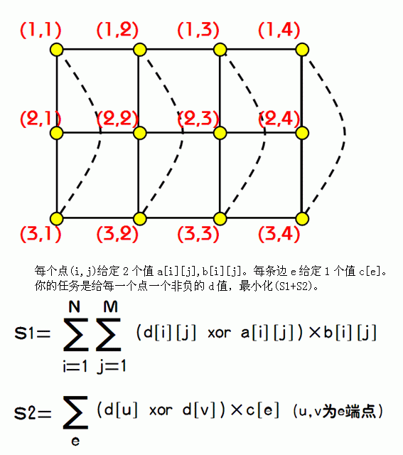

第一行2个整数n,m。
接着n行，每行m个数，其中第i行第j个数表示a[i][j]。
接着n行，每行m个数，其中第i行第j个数表示b[i][j]。
接着n行，每行m-1个数，其中第i行第j个数表示(i,j)与(i,j+1)的边的c值。
接着n-1行，每行m个数，其中第i行第j个数表示(i,j)与(i+1,j)的边的c值。
最后一行m个数，其中第i个数表示(1,i)与(n,i)的边的c值。

2 2
3 6
7 3
9 9
1 8
9
5
3 9
4 3
49
对于100%的数据 2<=n<=5 1<=m<=10000
a,b,c的值均为不大于10^6的正整数。